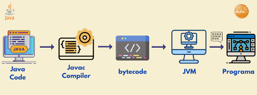

¿Qué es Java?

Java es un lenguaje de programación versátil y orientado a objetos que sigue el principio "Escribe una vez, ejecuta en cualquier lugar". Desarrollado por Sun Microsystems en 1995, se ha convertido en uno de los lenguajes de programación más populares del mundo.
Características Clave de Java
- Independencia de la plataforma
- Orientado a objetos
- Robusto y seguro
- Simple y fácil de aprender
- Multihilo
Aplicaciones de Java
- Desarrollo web
- Desarrollo de aplicaciones Android
- Software empresarial
- Aplicaciones científicas
- Tecnologías de Big Data
Recursos de Aprendizaje
- Documentación oficial de Java
- Cursos en línea (Coursera, edX, Udemy)
- Libros de programación Java
- Bootcamps de codificación
- Plataformas de práctica (HackerRank, LeetCode)